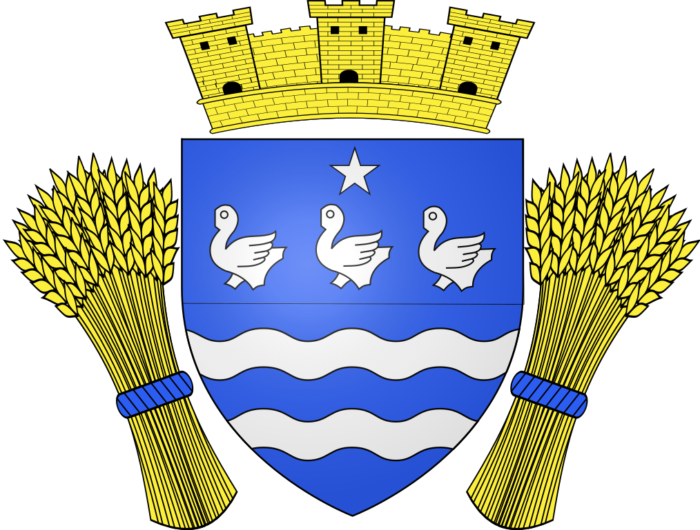

Désembouage à Cerny (91590)
Retrouvez un chauffage performant, économique et durable
Avec les années, les installations de chauffage à eau subissent un encrassement progressif. Boues, tartre, résidus métalliques et impuretés circulent dans le réseau et finissent par s’accumuler dans les radiateurs, les planchers chauffants et les canalisations. Résultat : une perte de performance, une hausse de la consommation énergétique et un confort thermique dégradé.
À Cerny (91590), SPC Santos Plomberie Chauffage met son savoir-faire au service des particuliers et des professionnels pour réaliser un désembouage complet et efficace, garantissant un chauffage plus performant et plus durable.

Pourquoi réaliser un désembouage de votre chauffage à Cerny ?
Le désembouage consiste à nettoyer en profondeur l’ensemble du circuit de chauffage afin d’éliminer les dépôts qui entravent la bonne circulation de l’eau chaude. Ces boues proviennent principalement de la corrosion naturelle des métaux, du calcaire présent dans l’eau et des micro-particules générées par l’usure des composants.
À Cerny, où de nombreux logements disposent de systèmes de chauffage central anciens ou récents, le désembouage est une opération essentielle pour préserver les performances de l’installation.
Les signes d’un circuit de chauffage encrassé
Certains symptômes ne trompent pas :
- Radiateurs tièdes ou froids par endroits
- Bruits inhabituels dans les canalisations (glouglous, claquements)
- Montée en température lente
- Chaleur inégale entre les pièces
- Augmentation inexpliquée de la facture de chauffage
- Pannes récurrentes de la chaudière ou de la pompe à chaleur
Dès l’apparition de ces signaux, un désembouage devient indispensable.
Les avantages concrets du désembouage
Faire réaliser un désembouage à Cerny par un professionnel qualifié présente de nombreux bénéfices immédiats et durables :
- Amélioration significative du confort thermique
- Réduction de la consommation énergétique jusqu’à 20 %
- Circulation homogène de la chaleur dans tout le logement
- Prévention des pannes et de la corrosion interne
- Prolongation de la durée de vie de la chaudière et des radiateurs
En moyenne, il est recommandé de procéder à un désembouage tous les 5 à 7 ans, ou plus fréquemment pour les installations très sollicitées.
Votre spécialiste du désembouage à Cerny (91590)
Implantée en Essonne, SPC Santos Plomberie Chauffage intervient depuis plus de 10 ans auprès des particuliers, copropriétés et professionnels pour l’entretien et l’optimisation des systèmes de chauffage. Notre proximité géographique nous permet d’intervenir rapidement à Cerny, mais aussi dans les communes voisines comme La Ferté-Alais, Mennecy, Ballancourt-sur-Essonne ou Itteville.
Notre priorité : vous offrir un chauffage fiable, performant et économique, grâce à des interventions soignées et adaptées à chaque installation.
Nos points forts
- Une expertise reconnue en plomberie et chauffage
- Des techniciens qualifiés et régulièrement formés
- Des équipements modernes et performants
- Des produits respectueux des installations et de l’environnement
- Des délais d’intervention rapides à Cerny et alentours
Nos prestations de désembouage à Cerny
Nous intervenons sur tous types de systèmes de chauffage hydraulique, qu’ils soient individuels ou collectifs :
- Radiateurs à eau chaude (fonte, acier, aluminium)
- Planchers chauffants hydrauliques
- Chaudières gaz, fioul ou à condensation
- Pompes à chaleur air/eau
- Installations hybrides et collectives
1. Diagnostic précis de votre installation
Chaque intervention débute par un diagnostic complet : analyse de la qualité de l’eau, contrôle du débit, mesure des températures et vérification de la pression. Cette étape est essentielle pour choisir la méthode de désembouage la plus adaptée.
2. Nettoyage en profondeur du circuit
Selon l’état de l’installation, nous utilisons :
- Le désembouage mécanique , par machine à impulsion ou à pression contrôlée, pour expulser efficacement les boues
- Le désembouage chimique doux , à l’aide de produits non corrosifs qui dissolvent les dépôts sans détériorer les canalisations
3. Traitement préventif anti-corrosion
Une fois le nettoyage terminé, nous injectons un inhibiteur de corrosion afin de limiter la formation future de boues et protéger durablement votre réseau de chauffage.
4. Vérification et remise en service
Nous procédons ensuite à des tests complets : circulation de l’eau, montée en température, homogénéité de la chaleur. Votre installation est remise en service dans des conditions optimales.
À qui s’adressent nos services à Cerny ?
SPC Santos Plomberie Chauffage intervient auprès de :
- Particuliers : maisons individuelles et appartements
- Syndics et copropriétés : installations collectives
- Entreprises et commerces
- Collectivités et bâtiments publics
Chaque prestation est entièrement personnalisée selon la configuration, la surface et les besoins du bâtiment.
Des tarifs clairs et sans surprise
La transparence fait partie de nos engagements. Avant toute intervention à Cerny, nous vous remettons un devis gratuit, détaillé et sans engagement, précisant la méthode utilisée, la durée de l’intervention et le coût total.
Le désembouage représente un investissement rentable, car il permet de réduire durablement vos dépenses énergétiques tout en évitant des réparations coûteuses.
SPC Santos Plomberie Chauffage : une référence en Essonne
Créée en 2010, SPC Santos Plomberie Chauffage s’est imposée comme un acteur fiable et reconnu du chauffage et de la plomberie en Essonne. Nous intervenons également en Seine-et-Marne, Val-de-Marne et Hauts-de-Seine.
Nous utilisons du matériel conforme aux normes européennes et des méthodes éprouvées, pour garantir un désembouage efficace, sécurisé et durable.
Nos engagements qualité
- Diagnostic gratuit et personnalisé
- Produits respectueux de l’environnement
- Intervention rapide et soignée
- Garantie de satisfaction sur nos prestations
Contactez votre spécialiste du désembouage à Cerny (91590)
Votre chauffage est moins performant ? Vos radiateurs chauffent mal ? Votre consommation augmente ?
Contactez dès maintenant SPC Santos Plomberie Chauffage, votre expert du désembouage à Cerny, pour un diagnostic gratuit et une intervention rapide.
📞 Téléphone : 01 69 25 77 54
📍 Adresse : 19 rue Pierre Brossolette, 91700 Sainte Geneviève des Bois
📧 Email : contact@desembouage-91.fr
SPC Santos Plomberie Chauffage – Désembouage à Cerny (91590) Votre partenaire local pour un chauffage plus propre, plus performant et plus économique.
Contactez-nous au 01 69 25 77 54